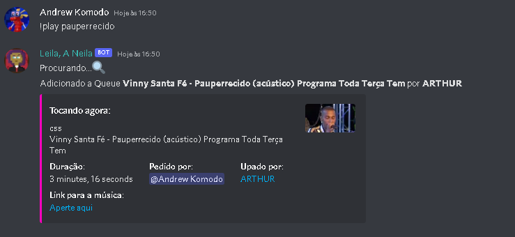
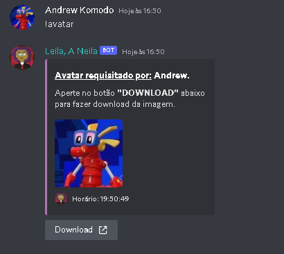
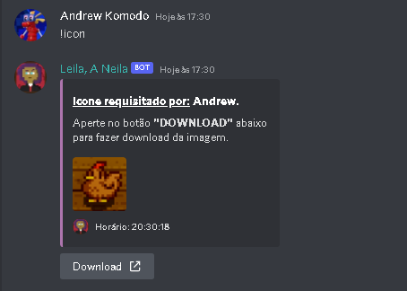
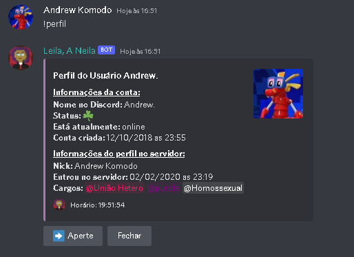
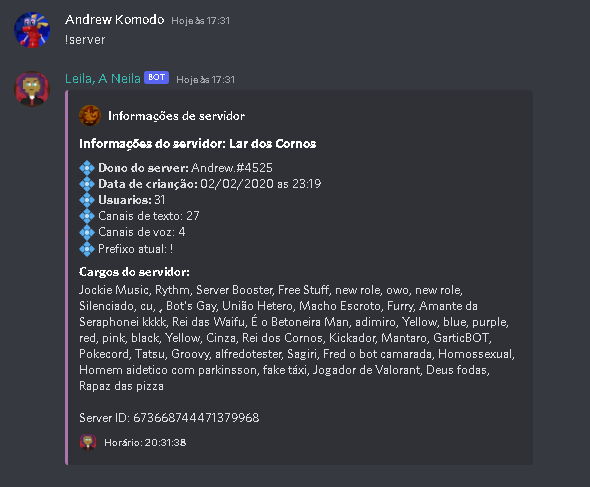
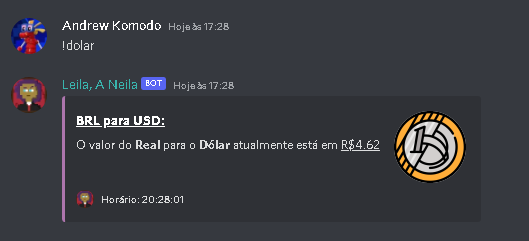
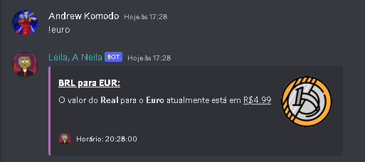
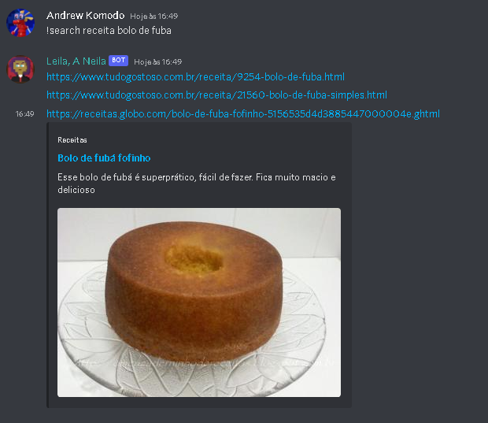

Leila bot foi um bot feito por mim com o propósito de aprendizado e melhor entendimento de como o pycord e api's funcionam.
Deixo aqui um link para adicionar o bot ao seu servidor do discord. :D
Acabei mexendo demais nele e o seu escopo que antes era para apenas fazer coisas básicas cresceu e hoje ele pode fazer coisas como:
Comandos de música:
- join [canal de voz(opcional)] - Entra na call em que o usuário está
- summon [canal de voz(opcional)] - Invoca o bot forçadamente, só pode ser usado por mod.
- play [nome] - Toca as músicas especifidas 
- ban [usuário] - Este comando vai banir o usuário especificado do server.
- kick [usuário] - Este comando vai expulsar o usuário especificado do server.

- avatar [usuário (opcional)] - Bot manda a imagem do perfil do usuário em uma embed. 
- icon - Bot manda icone do server em uma embed. 
- perfil [usuário (opcional)] - Bot manda uma embed com informações da conta do usuário (data de criação, cargos que tem no server e etc...) 
- server - Bot manda uma embed com informações do servidor como no comando de perfil. 
- dolar - Bot manda a cotação do Real para o Dolar atualmente. 
- euro - Bot manda a cotação do Real para o Euro atualmente. 
- search [pesquisa] - O bot irá pesquisar oque foi pedido e mandar links do que achou. 
Futuramente estarei fazendo melhorias e adições de comandos novos no bot.
Atualmente com uma pausa.